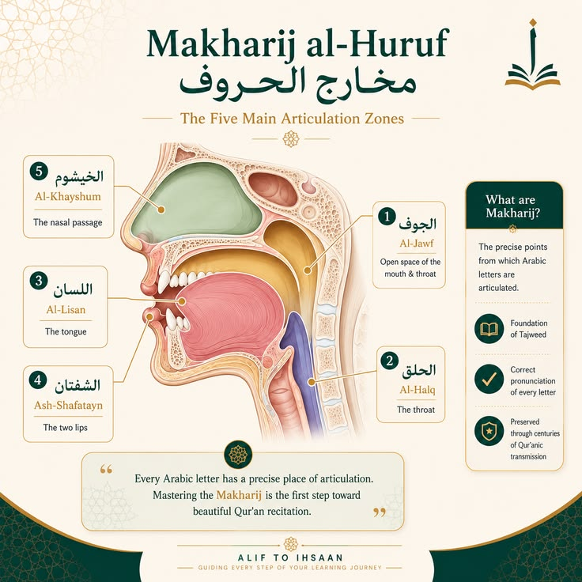

Tajweed & Makhraj
Learn the articulation points (makhraj) of 28 Arabic letters plus Hamza. This is the foundation of correct Quranic recitation. Each letter has a specific point of articulation that gives it its unique sound and character.

Five Main Articulation Zones
Al-Jawf
Empty space Al-Halq
Throat Al-Lisan
Tongue Ash-Shafatan
Two lips Al-Khayshum
Nasal passage
Empty space Al-Halq
Throat Al-Lisan
Tongue Ash-Shafatan
Two lips Al-Khayshum
Nasal passage
The Five Main Articulation Zones (Makharij al-Huruf) — Click or tap to understand where each letter originates
Letter Pronunciation Audio
Listen to the full sequence or play any precisely marked letter segment.
29 marked segments
Now playingNone
Current time00:00
Total duration00:00
Speed1x
Audio ready when the pronunciation file is available.